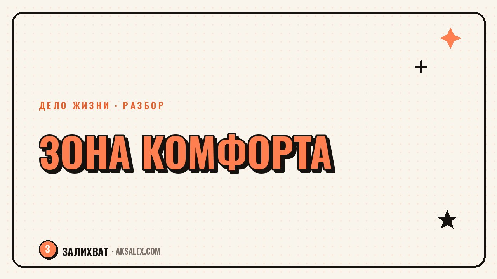

Как выйти из зоны комфорта и начать действовать

«Выйди из зоны комфорта» звучит как лозунг с мотивационной картинки, но на практике большинство людей застревают не потому, что им лень, а потому что не понимают, с какого конкретного шага начать. Разберём зону комфорта без пафоса: что это такое на самом деле, почему мозг держится за привычное даже когда оно надоело, и какие шаги реально работают, а какие только создают видимость движения.
Зона комфорта - это не лень, а экономия энергии
Мозг устроен так, чтобы беречь ресурсы: привычные действия требуют меньше энергии, чем новые. Поэтому любое незнакомое дело - смена работы, новый проект, разговор на сложную тему - подсознательно воспринимается как угроза, даже если объективно опасности нет.
Это объясняет, почему одного решения «теперь я начинаю» обычно не хватает. Решение принимается в голове за секунду, а привычка менять поведение требует повторений. Отсюда и ощущение, что ты «слабый» или «недисциплинированный» - хотя на самом деле ты недооценил, сколько повторов нужно телу и мозгу, чтобы новое действие стало привычным.
Зона комфорта не исчезает после одного смелого поступка. Она сдвигается постепенно, по мере того как непривычное действие повторяется и перестаёт пугать.
Почему резкие решения часто не работают
Классический сценарий: решил кардинально всё изменить, продержался неделю на энтузиазме, потом сорвался и вернулся к старому с чувством вины. Проблема не в слабой воле, а в масштабе шага - мозг воспринимает слишком большое изменение как угрозу и включает защитное сопротивление.
Признаки того, что шаг выбран слишком крупным
- Ты откладываешь первое действие больше недели, хотя знаешь, что оно важно.
- При мысли о шаге возникает не лёгкое волнение, а тяжесть или паника.
- Ты придумываешь план на полгода вперёд, но не можешь назвать, что сделаешь сегодня.
- Любая мелкая неудача кажется поводом бросить всё целиком.
Маленькие шаги, которые реально двигают дело
Работает не «прыжок в неизвестность», а дробление пугающего действия на такие маленькие кусочки, что их почти не страшно делать. Если хочешь сменить профессию - не «увольняюсь завтра», а «сегодня нахожу три вакансии и читаю требования». Если хочешь завести блог - не «снимаю первое видео», а «сегодня пишу три темы, о которых могу говорить».
Ключевое отличие маленького шага от большого - его можно сделать сегодня, в течение часа, без специальной подготовки. Если шаг требует «сначала собраться с духом» - он ещё слишком крупный, дели дальше.
- Выбери одно действие, которое займёт не больше 20 минут.
- Привяжи его к конкретному времени дня, а не к «как будет настроение».
- Отмечай выполненные шаги - мозгу важно видеть накопленный прогресс.
- После выполнения маленького шага сразу назначай следующий, не откладывая на «потом разберусь».
Как справляться со страхом, который всё равно возникает
Страх перед новым действием - это нормальная реакция, а не сигнал, что делать не нужно. Разница между тем, кто выходит из зоны комфорта, и тем, кто застревает, не в отсутствии страха, а в готовности действовать рядом с ним, а не дожидаться, когда он исчезнет.
Помогает заранее проговорить себе худший реалистичный исход. Часто оказывается, что даже он не катастрофичен: откажут на собеседовании, ролик наберёт мало просмотров, разговор пройдёт неловко. Это неприятно, но не разрушительно - и это снимает часть напряжения, которое раздувает воображение.
Сравнение подходов к изменениям
Разные стратегии выхода из зоны комфорта подходят для разных ситуаций - вот как выбрать подходящую.
| Подход | Когда подходит | Риск |
|---|---|---|
| Резкое решение (уволиться, начать с понедельника) | Когда уже есть подушка и чёткий план | Срыв из-за перегрузки, возврат к старому |
| Дробление на маленькие шаги | В большинстве случаев, особенно на старте | Кажется медленным, но даёт устойчивый результат |
| Поддержка окружения или наставника | Когда страшно двигаться в одиночку | Зависимость от чужого темпа и мнения |
| Пробный период без обязательств | Когда не уверен, твоё ли это дело | Можно застрять в «пробовании» без решения |
Что делать, если шаг сделан, а результата не видно
Отсутствие мгновенного результата - не повод считать, что шаг был ошибкой. Большинство изменений накапливаются незаметно: навык, уверенность, первые контакты в новой сфере растут постепенно, а не скачком.
Дай себе заранее оговоренный срок - месяц или два - прежде чем оценивать, работает ли выбранное направление. Это защищает от импульсивного отказа от дела после первой же сложности, которая на самом деле - часть процесса.
Частые вопросы
Как выйти из зоны комфорта и начать действовать, если страшно
Начни с действия, которое займёт не больше 20 минут и не требует специальной подготовки - страх снижается через маленькие повторяемые шаги, а не через одно смелое решение. Страх не обязан исчезнуть до начала действия, достаточно действовать рядом с ним.
Почему я постоянно откладываю важные изменения
Чаще всего дело не в лени, а в том, что выбранный шаг слишком крупный и мозг воспринимает его как угрозу. Раздели действие на части настолько маленькие, чтобы каждую можно было сделать сегодня без подготовки.
Сколько времени нужно, чтобы привыкнуть к новому действию
Это индивидуально и зависит от сложности действия и регулярности повторений, точного универсального срока не существует. Ориентируйся не на дату, а на то, что действие перестало требовать усилия воли и стало частью обычного дня.
Как понять, что пора менять что-то в жизни
Признак - постоянное ощущение несоответствия между тем, как ты живёшь, и тем, что для тебя важно, которое не проходит месяцами. Разовое недовольство после плохого дня - не повод для резких решений, а длительное и устойчивое - стоит воспринимать серьёзно.
Что делать, если после маленьких шагов результата всё равно нет
Дай себе заранее определённый срок, например месяц, прежде чем судить об эффективности направления - большинство изменений накапливаются незаметно. Если после честной попытки результата правда нет, это повод скорректировать способ, а не бросать цель совсем.
Раз тема оказалась полезной, вот что почитать следующим. Разбираем, какие форматы заработка на ИИ подходят новичку и с чего начать, если опыта пока нет.
Читать статью →а не вручную